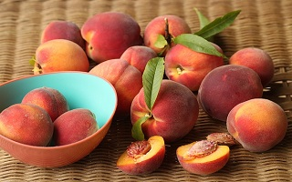

<!DOCTYPE html>
<html lang="en">
<head>
    <meta charset="UTF-8">
    <meta name="viewport" content="width=device-width, initial-scale=1.0">
    <title>jQuery 예제</title>
    <!-- 라이브러리 CDN 가져오기-->
    <script src="https://code.jquery.com/jquery-3.7.1.js" integrity="sha256-eKhayi8LEQwp4NKxN+CfCh+3qOVUtJn3QNZ0TciWLP4=" crossorigin="anonymous"></script>

</head>
<body>
    <p id="show"></p>
    <div class="pic"></div>
    <script>
        // 자바스크립트 방식(실행)
        // 윈도우가 실행될 때 데이터가 로드됨
        /*
        window.onload = function(){
            document.getElementById('show').innerHTML="되는건가?";
        }
        */

        function a() {
            function b() {

            }
        }

        // jQuery 방식(실행)
        // 아래는 환경
        $(document).ready(function(){
            // 선택자(태그, id, class) > $(선택자)안에 기입
            // text(문자) > innerText
            $('#show').text("되는거냐고");
            
            // html(태그, 문) > innerHTML 
            $('#show').html("<h3>되는거냐고!!</h3>")
                    //   .css("color","red");
                    // 체이닝 방식(연결 사슬)
                      .css({color:"red", fontSize: "24px"});

            $('.pic').html("")
                    //   .children().css({width: "600px"});
                    // css()에서 체이닝 방식일때 속성은 카멜 표기법으로 기재
                      .children().css({borderRadius: "600px"});

            // $('.pic > img').css({width: "600px"});

        });
    </script>
</body>
</html>